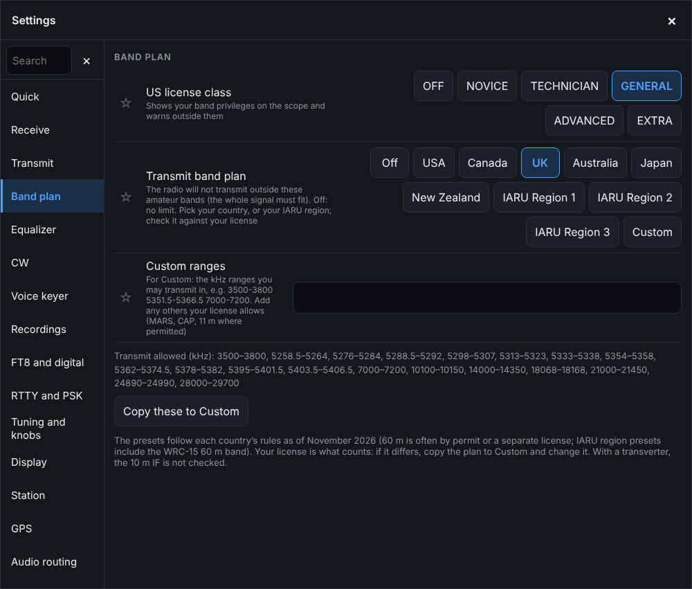

Band plan#
More → Band plan sets where the radio may transmit, and shows your US license privileges on the scope.

Transmit band plan#
Choose your country, or your IARU region. The radio then refuses to transmit unless the whole signal (the dial plus the filter or tone offset) fits inside an allowed range. The header shows TX blocked when you are outside, and the radio will not key, whatever asks it to: PTT, CAT, TCI, HPSDR, the keyer or the digital modes.
| Plan | Covers |
|---|---|
| Off | no limit (the default) |
| USA, Canada, UK, Australia, Japan, New Zealand | that country's amateur bands |
| IARU Region 1, 2, 3 | the IARU region's bands, with the WRC-15 60 m band |
| Custom | the ranges you type in Custom ranges |
Under the buttons the page lists the ranges of the selected plan in kHz. Copy these to Custom copies them into Custom ranges and selects Custom, so you can start from your country's plan and change it.
The presets follow each country's rules as of November 2026. 60 m is often by permit or a separate license. Your license is what counts: if it differs from the preset, copy the plan to Custom and change it.
Custom ranges#
Type kHz ranges as low-high, separated by spaces or commas, for example:
3500-3800 5351.5-5366.5 7000-7200 14000-14350Add any other ranges your license allows (MARS, CAP, 11 m where permitted). With a transverter, the 10 m IF is not checked.
US license class and privilege ribbons#
US license class (Novice, Technician, General, Advanced, Extra) outlines your row in the colored ribbons along the top of the scope and warns in the header when the signal you would transmit in the current mode falls outside your privileges or in the wrong segment. The ribbons show the FCC §97.301 and §97.305 privileges: CW only, CW and data, CW and phone, plus the 60 m channels. The license class is a guide only: it does not stop the transmitter (the transmit band plan does that). More → Display → Band privilege ribbons chooses All classes, My class or Off.
Settings#
| Setting | Console name | Default | Values | What it does |
|---|---|---|---|---|
| US license class | LICENSE | OFF | OFF, NOVICE, TECHNICIAN, GENERAL, ADVANCED, EXTRA | Shows your band privileges on the scope and warns outside them |
| Transmit band plan | TXPLAN | OFF | OFF, US, CANADA, UK, AUSTRALIA, JAPAN, NZ, REGION1, REGION2, REGION3, CUSTOM | The radio will not transmit outside these amateur bands (the whole signal must fit). Off: no limit. Pick your country, or your IARU region; check it against your license |
| Custom ranges | TXEDGES | (empty) | text | For Custom: the kHz ranges you may transmit in, e.g. 3500-3800 5351.5-5366.5 7000-7200. Add any others your license allows (MARS, CAP, 11 m where permitted) |